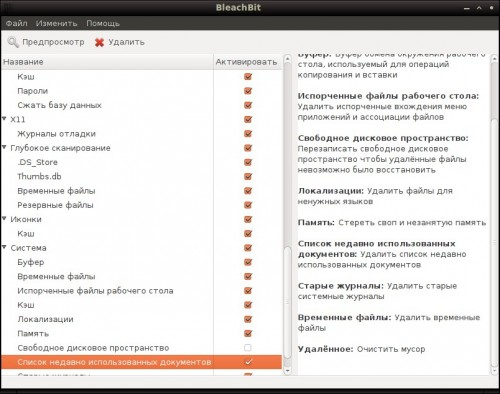

BleachBit — это удобная бесплатная программа для очистки системы, которая имеет версии как для Linux, так и для Windows. Утилита имеет простой и понятный интерфейс на русском языке. Все пункты снабжены подробными подсказками, так что ее использование не вызовет вопросов даже у начинающих пользователей.

Принцип работы с программой очень прост и сводится к выбору опций очистки с помощью чекбоксов в средней колонке. После этого можно нажать кнопку Предпросмотр для поиска мусора и затем Удалить для его удаления. У меня программа буквально за несколько секунд нашла более гигабайта ненужных файлов.
Кроме обычного поиска и удаления мусора BleachBit умеет выполнять и целый ряд специальных операций:
Обратите внимание, что некоторые функции программы требуют повышенных прав, поэтому запускать программу следует с правами администратора, для чего имеется специальный ярлык в главном меню.
В целом, BleachBit является незаменимым помощником для поддержания вашей системы в чистоте и освобождении дополнительного места на жестком диске.
Установить программу можно из Центра приложений Ubuntu или скачав инсталляционный файл с сайта программы. Там же доступна для загрузки и версия для Windows, которая умеет подчищать следы работы более чем за 500 программами и является достойным конкурентом Ccleaner.